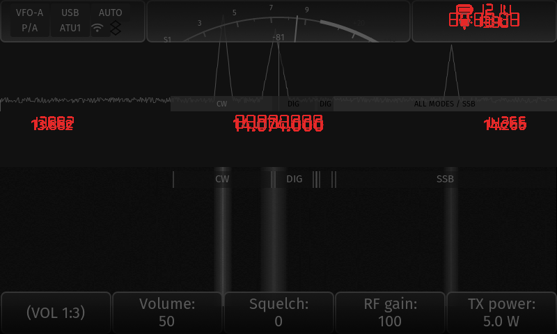
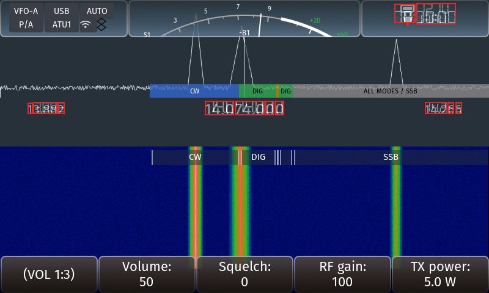

PASS exit 0
11f8d689317a76f68cd4da5d6915e13e8b09450e562d3f212002a5379f448a1ee8eb9a16ffdd8f06x6200-uiharness| Gate | Required | Status | Summary |
|---|---|---|---|
| Functional | yes | PASS | 35 scenarios captured on both revisions |
| Visual Regression | yes | PASS | no unexplained visual regressions |
| Quality Contract | yes | PASS | 373 contract checks passed on the candidate |
| Performance | yes | PASS | render-cost proxy within budget |
| Hardware | advisory | BLOCKED | no physical X6200 attached; hardware behaviour is not measured |
| Energy | advisory | BLOCKED | no power measurement; energy evidence must be physical |
| Scenario | Changed px | Area | Regions |
|---|---|---|---|
| app-bands | 0 | 0.000% | — |
| app-close-home | 0 | 0.000% | — |
| apps-menu-1 | 0 | 0.000% | — |
| apps-menu-2 | 0 | 0.000% | — |
| apps-menu-3 | 0 | 0.000% | — |
| apps-menu-4 | 0 | 0.000% | — |
| apps-menu-5 | 0 | 0.000% | — |
| apps-menu-6 | 0 | 0.000% | — |
| bench-render | 0 | 0.000% | — |
| bt-dialog | 0 | 0.000% | — |
| home-bateria-externa | 0 | 0.000% | — |
| home-frecuencia-extrema | 0 | 0.000% | — |
| home-usb-20m | 0 | 0.000% | — |
| main-bateria-baja | 0 | 0.000% | — |
| main-espectro-agua | 0 | 0.000% | — |
| main-foco | 0 | 0.000% | — |
| main-frecuencia-dseg | 4862 | 1.266% | barra_superior, frecuencia, reloj_potencia, ajustes_audio_ganancia |
| main-natural | 0 | 0.000% | — |
| main-natural-eco | 0 | 0.000% | — |
| main-otro-tema | 0 | 0.000% | — |
| main-tema-classic | 0 | 0.000% | — |
| main-tema-holo | 0 | 0.000% | — |
| main-tema-material-3 | 0 | 0.000% | — |
| main-tema-outdoor-negative | 0 | 0.000% | — |
| main-tema-rs | 0 | 0.000% | — |
| main-tema-vision | 0 | 0.000% | — |
| main-tema-vision-cwr | 0 | 0.000% | — |
| main-tema-vision-usbd | 0 | 0.000% | — |
| main-tx-simulado | 0 | 0.000% | — |
| settings-audio | 0 | 0.000% | — |
| settings-bands | 0 | 0.000% | — |
| settings-home | 0 | 0.000% | — |
| settings-perfil | 0 | 0.000% | — |
| settings-rs-theme | 0 | 0.000% | — |
| settings-wfbat | 0 | 0.000% | — |


| Scenario | REAL | PARTIAL | SYNTHETIC | UNSUPPORTED |
|---|---|---|---|---|
| app-bands | 16 | 5 | 3 | 5 |
| app-close-home | 17 | 5 | 4 | 3 |
| apps-menu-1 | 16 | 5 | 3 | 3 |
| apps-menu-2 | 16 | 5 | 3 | 3 |
| apps-menu-3 | 16 | 5 | 3 | 3 |
| apps-menu-4 | 16 | 5 | 3 | 3 |
| apps-menu-5 | 16 | 5 | 3 | 3 |
| apps-menu-6 | 16 | 5 | 3 | 3 |
| bench-render | 15 | 4 | 3 | 3 |
| bt-dialog | 19 | 4 | 4 | 4 |
| home-bateria-externa | 15 | 4 | 3 | 3 |
| home-frecuencia-extrema | 15 | 4 | 3 | 3 |
| home-usb-20m | 15 | 4 | 3 | 3 |
| main-bateria-baja | 15 | 4 | 3 | 3 |
| main-espectro-agua | 15 | 4 | 3 | 3 |
| main-foco | 15 | 4 | 3 | 3 |
| main-frecuencia-dseg | 15 | 4 | 3 | 3 |
| main-natural | 15 | 4 | 3 | 3 |
| main-natural-eco | 15 | 4 | 3 | 3 |
| main-otro-tema | 15 | 4 | 3 | 3 |
| main-tema-classic | 15 | 4 | 3 | 3 |
| main-tema-holo | 15 | 4 | 3 | 3 |
| main-tema-material-3 | 15 | 4 | 3 | 3 |
| main-tema-outdoor-negative | 15 | 4 | 3 | 3 |
| main-tema-rs | 15 | 4 | 3 | 3 |
| main-tema-vision | 15 | 4 | 3 | 3 |
| main-tema-vision-cwr | 15 | 4 | 3 | 3 |
| main-tema-vision-usbd | 15 | 4 | 3 | 3 |
| main-tx-simulado | 15 | 4 | 3 | 3 |
| settings-audio | 17 | 4 | 10 | 4 |
| settings-bands | 17 | 5 | 3 | 5 |
| settings-home | 17 | 4 | 10 | 4 |
| settings-perfil | 17 | 4 | 10 | 4 |
| settings-rs-theme | 17 | 4 | 10 | 4 |
| settings-wfbat | 17 | 4 | 10 | 4 |
| Issue | Fixture | A | B | Classification |
|---|---|---|---|---|
| UI-001 | home-usb-20m | no | no | NOT_REPRODUCED |
| UI-009 | home-bateria-externa | no | no | NOT_REPRODUCED |
| UI-010 | main-otro-tema | — | — | UNVERIFIED |
| UI-011 | main-tema-vision | — | — | UNVERIFIED |
| UI-012 | main-tema-vision | — | — | UNVERIFIED |
| UI-013 | main-tema-outdoor-negative | — | — | UNVERIFIED |
| UI-014 | main-tema-vision-usbd | — | — | UNVERIFIED |
| UI-015 | settings-wfbat | — | — | UNVERIFIED |
| UI-016 | settings-home | — | — | UNVERIFIED |
| UI-002 | apps-menu-1 | — | — | UNVERIFIED |
| UI-003 | home-usb-20m | — | — | UNVERIFIED |
| UI-004 | settings-home | — | — | UNVERIFIED |
| UI-005 | bt-dialog | — | — | UNVERIFIED |
| UI-006 | home-usb-20m | — | — | UNVERIFIED |
| UI-007 | settings-rs-theme | — | — | UNVERIFIED |
| UI-008 | home-usb-20m | — | — | UNVERIFIED |
373 checks, 0 failure(s), 0 unchanged baseline defect(s).